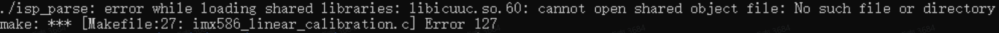

5.10.5. 生成ISP效果库
5.10.5.1. 功能说明
GenerateLib用于将isp tuning的参数转换为so格式的动态库，用于isp参数部署。
5.10.5.2. 源文件说明
通过ControlTool获取tuning得到的json参数配置
Load HW Register加载保存的所有Hardware寄存器的 settings.json文件。
Load HW Register(staggered)加载保存下的部分模块的 Hardware寄存器的json文件。
Save All HW Registers将ControlTool中Hardware 所有硬件寄存器的值保存到json文件，生成settings.json
Save Visible HWRegisters: 将ControlTool中Hardware当前界面显示的单个模块硬件寄存器的值保存到json文件。
Save Dynamic Calibrations将ControlTool中的Dynamic Calibration中的参数保存为dynamic-calibrations.json文件。
Save Static Calibrations:将ControlTool中的Static Calibration中的参数保存为dynamic-calibrations.json文件。
Calibrations to C Source将ControlTool保存下json转换为C源文件
5.10.5.3. 工具下载地址
5.10.5.4. 更新Command.json
V1版本的command.json 可以直接使用CalibrationTool导出json文件，也可以从此地址下载
5.10.5.5. 编译方法
1.修改MakeFile中交叉编译工具的路径，将CROSS_COMPILE变量修改成本机上对应路径
#CROSS_COMPILE=aarch64-linux-gnu-
2.替换目录中的isp参数相关json文件json文件的命名按照下面的格式命名， 以IMX586为例，静态参数文件imx586_hdr_static.json，动态参数文件imx586_hdr_dynamic.json，所有Hardware寄存器的配置settings.json，调试完成后，通过ControlTool导出 dynamic 、static及所有Hardware寄存器配置，并按照上面的格式命名。
3.编译过程
# cd generate_lib
# make clean
# make
执行完上述步骤后，生成对应的参数库文件。
5.10.5.6. Debug信息
如遇到libicuuc.so cannot open shared object file错误,请执行脚本sh load_so.sh解决 